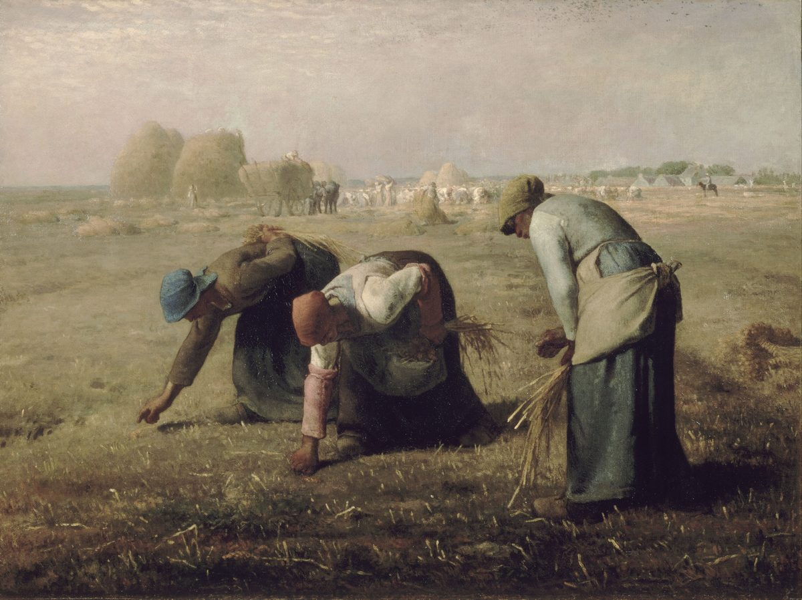

Leviticus 19 — The Mister Translation

⚠ Millet paints the exact transaction Leviticus 19:9-10 legislates: what the main harvest leaves behind — visible in the distant, well-peopled abundance of haystacks and a loaded wagon — belongs, by law rather than charity, to figures like the three women bent in the foreground. When Millet exhibited this at the Paris Salon of 1857, French critics and the propertied classes reacted with genuine alarm: one saw in it an intimation of “the scaffolds of 1793,” and the painting's unusually large canvas — a size normally reserved for history painting or religious subjects — read to contemporaries as a political claim about rural poverty dressed up as a harvest scene. What Millet's own century found radical, this chapter had already made law three thousand years earlier: the corner of the field and the fallen grain were never the landowner's to withhold in the first place.
{kind=link}
Translator’s Notes
Be holy, and the refrain that follows it
“You shall be holy, for I…am holy” is quoted directly at 1 Peter 1:16 (already on this shelf), addressed to a scattered, largely gentile church centuries later and continents away — the single clearest line connecting this chapter to the New Testament besides v18. Kadosh (see the Dictionary) does not mean morally pure in the first instance; it means SET APART, and the whole chapter that follows is what set-apartness looks like translated into daily practice — not temple ritual but field edges, honest scales, and how you treat a day laborer.
⚠ “I am Jehovah” (or “I am Jehovah your God”) closes off individual commands fifteen times in this one chapter — more densely than anywhere else in the Torah. It is not decoration. Each command in this chapter otherwise reads as ordinary civil law (property, wages, courts, weights); the refrain is what keeps reattaching them to something beyond enforceability — a reason to leave the vineyard's edge unpicked that has nothing to do with anyone catching you if you didn't.
Parents and sabbath before idols
⚠ The order here inverts the Decalogue's own sequence. Exodus 20 (already on this shelf) moves from no other gods, to no idols, to the sabbath, to honoring parents — theology first, then the calendar, then the family. Leviticus 19 opens instead with parents and sabbath (v3), and only then turns to idols (v4) — family and rhythm of life given first, worship named second. Whether this is meaningful or simply how the list happened to be assembled is not something the text explains.
A vile thing, if you wait too long
The peace offering's eating-window (already introduced at Leviticus 7:16–18, already on these pages) gets a name here for what happens if you break it: piggul, usually rendered “an abomination” or, more literally, tainted or foul meat. The offering itself was acceptable; time is what disqualifies it. A sacrifice correctly made can still be ruined by being kept past its purpose.
The corner of the field, left unclaimed on purpose
Neither the amount of the field's edge nor the harvest's gleanings is specified by measure anywhere in the Torah — later rabbinic law (Mishnah Pe'ah) works out fractions and minimums, but Leviticus itself leaves it to the farmer's own sense of enough. The book of Ruth (already on this shelf) is this law in narrative form: a Moabite widow gleaning in Boaz's field is not receiving charity so much as exercising a right this chapter grants her by name, twice over — “for the poor and for the stranger,” and Ruth is both.
Stealing, dealing falsely, false oaths
Three commands in two verses track the Decalogue closely (theft, false witness, and the third commandment's ban on taking the name in vain, all already on this shelf at Exodus 20) but widen each one: not just theft outright but dealing falsely in general, not just perjury in court but lying to “one another” as ordinary practice, not just formal oaths but any false use of the divine name. The Decalogue's short list becomes, here, a broader ethic of plain dealing.
Wages held overnight, a stumbling block set on purpose
⚠ “The wages of a hired worker shall not remain with you all night” assumes a laborer who is paid daily because he has no reserve to survive on if he isn't — KJV and ESV both keep the vivid image of the wage physically staying overnight; NIV trims it to “do not hold back…overnight.” It is the same economic reality James 5:4 (not yet on this shelf) will later name outright: wages “kept back by fraud” that “cry out.” “A stumbling block before the blind” became, in later Jewish ethics and still in Hebrew idiom today (lifnei iver), the standard shorthand for exploiting someone's specific vulnerability against them — not simply unkindness to the disabled, but any advantage taken because the other person structurally cannot see it coming.
Two words for the person next to you
⚠ This chapter uses two different Hebrew words English usually flattens into one. Amit — here “fellow” — is the word at v15 and v17, for a countryman inside the community's own legal and social bonds. Rea (see the note at v18) is the broader word. The distinction rarely survives translation, but it is real: v15's courtroom impartiality and v17's face-to-face rebuke are both addressed specifically to how Israelites treat each other as insiders, before the chapter's vocabulary widens. KJV, NIV, and ESV all print “neighbor” at both vv15 and 17, same as at v18 — flattening the distinction this translation keeps.
Not standing idly by
⚠ “You shall not stand idly by the blood of your neighbor” (lo ta'amod al dam re'ekha) became, centuries later, a foundational phrase in Jewish legal and ethical writing for the duty to intervene — not merely refraining from harm but being obligated to act when someone else is in danger, a genuinely different and stronger claim than most law codes make. It sits directly beside a ban on gossip (“talebearer”), as if spreading a story and refusing to act on one are two versions of the same failure: words or silence, either one substituting for something that should have been done.
Love your neighbor as yourself
⚠ The single most load-bearing half-verse this chapter contains. Jesus names it the second great commandment, inseparable from the first (Matthew 22:39, already on this shelf: “a second, like it”) — not a lesser add-on but the same command's other half. Paul calls it the whole law “summed up” (Romans 13:9, not yet on this shelf; Galatians 5:14, not yet on this shelf) and James calls it “the royal law” (James 2:8, not yet on this shelf). Rea, “neighbor” — distinct from v15/17's narrower amit — is itself expanded within this very chapter, sixteen verses later, to explicitly cover the foreigner (v34) using the identical grammar: ve-ahavta…kamokha, “and you shall love…as yourself,” word for word the same construction both times, with only the object changed. The command does not wait for the New Testament to widen its own reach; the chapter does that itself, in its own second half.
No mixing
Kilayim — mixed breeding, mixed seed, mixed cloth — groups three unrelated-looking prohibitions under one word and no stated reason; Deuteronomy 22:9-11 (not yet on this shelf) repeats the same three categories independently, suggesting this was a recognized legal set rather than an improvised list. The cloth law specifically, wool and linen together (sha'atnez, a word borrowed rather than native Hebrew, of unknown origin), is still observed by some Orthodox Jews today, checked by specialized inspection services before a garment is worn.
A case Deuteronomy doesn't cover
⚠ This is a genuinely distinct case from the free-woman adultery law of Deuteronomy 22:23-27 (not yet on this shelf), and the text goes out of its way to say so: because she is an unfree slave promised to a man but not yet redeemed or freed, the death penalty that would otherwise apply does not, and the passage prescribes instead an inquiry and a guilt offering. The law is narrower in its violence than the free case, precisely because her legal status is different — a distinction the chapter states rather than leaves to inference, though it does not explain the underlying reasoning further than that.
Forbidden fruit, on a schedule
Orlah — the same word used of the foreskin (Genesis 17, already on this shelf) — here names a tree's first three years of fruit as off-limits, the fourth year's fruit as holy and given in praise, and only the fifth year's fruit as ordinary food. The law is still kept by observant farmers in Israel today, tracked from the date of planting rather than by any external marker on the tree itself.
Blood, omens, mourning marks
The blood prohibition repeats Genesis 9:4 (already on this shelf) and anticipates Leviticus 17 (not yet on this shelf), which grounds it explicitly in blood carrying the life. Omen-reading and soothsaying are named without definition here; they recur, defined more specifically by method, in Deuteronomy 18 (now on these pages), where the same two words stand in a list of eight.
Marks left by grief, and marks forbidden
⚠ Trimming the corners of the head is almost certainly what later gave rise to payot, the uncut sidelocks still worn by some Orthodox and Hasidic Jewish men today — a prohibition read as requiring the hair at the temples to be left alone rather than simply not shaved bald. KJV keeps the old idiom, “round the corners of your heads…mar the corners of thy beard”; NIV modernizes to “cut the hair at the sides… clip off the edges”; this translation follows that same modern sense. Cuttings for the dead and tattoo marks both name mourning customs attested among Israel's neighbors in the ancient Near East — cutting the flesh in grief, marking the body in memory of the dead — set here alongside the corner-cut hair as things Israel's body is told not to carry, for reasons the text states as a fact (“I am Jehovah”) rather than an explanation.
The land itself, defiled
The warning moves in one sentence from a specific father's specific daughter to the whole land's condition — individual profanity treated as something that accumulates into national defilement, a pattern this book repeats at greater length in its warnings about the land “vomiting out” its inhabitants (Leviticus 18 and Leviticus 20, both already on these pages).
Sanctuary and mediums, side by side
Reverence for the sanctuary and the ban on consulting mediums are placed next to each other without explanation, but the pairing is not accidental: both are about where you go to ask questions and seek contact with what is beyond ordinary sight. One channel is authorized: the sanctuary itself, with its priesthood. The other — mediums, spiritists, the dead consulted directly — is not, regardless of whether it works. Saul's own violation of this exact law, seeking out the medium at Endor, is one of the more haunting scenes in Samuel (1 Samuel 28, not yet on this shelf).
Standing up
“The gray-headed” and “the old” are treated as due honor by a physical act, not merely an attitude — rising is itself the command, whatever internal respect may or may not accompany it. The verse pairs it directly with fearing God, the same way vv3-4 paired parents and sabbath before idols: reverence for God and reverence for those who came before you, treated as adjacent obligations rather than separate categories.
The stranger, loved with the same words as the neighbor
⚠ V34 repeats v18's command — “you shall love…as yourself” — with only one word changed: rea, “neighbor,” becomes simply “him,” referring back to the ger (see the Dictionary), the resident stranger. The grammar is otherwise identical, verb for verb. And the reason given is not abstract: “for you were strangers in the land of Egypt” grounds the command in memory rather than principle — you know what it is to be the outsider, because you were one. Whatever v18 asks of how Israel treats its own, v34 asks again, word for word, of how Israel treats everyone else.
Honest scales, and the whole chapter's last word
“Ephah” and “hin” are dry and liquid measures respectively; archaeologically recovered stone weights inscribed with their standard values (some marked pim, two-thirds of a shekel, matching the odd repair-price at 1 Samuel 13:21, not yet on this shelf) confirm that weights were physically checkable objects, not abstractions, and that tampering with them was a real and apparently common enough temptation to need naming here. The chapter that opened on being holy like God closes on a scale that reads the same number twice — the most unglamorous possible place to locate holiness, and exactly where this chapter insists on putting it.
Notes on this translation
Decisions. Two different Hebrew words for the person you owe conduct to are kept visibly distinct: rea as neighbor (vv13, 16, 18) and amit as fellow (vv15, 17) — explained at v15. Ger is stranger, matching this shelf's existing Dictionary entry. The refrain “I am Jehovah” (fifteen times in thirty-seven verses) is left exactly as repetitive in English as it is in Hebrew, rather than varied for style.
⚠ A note on order: Leviticus stands complete on these pages, chapters 1–27.